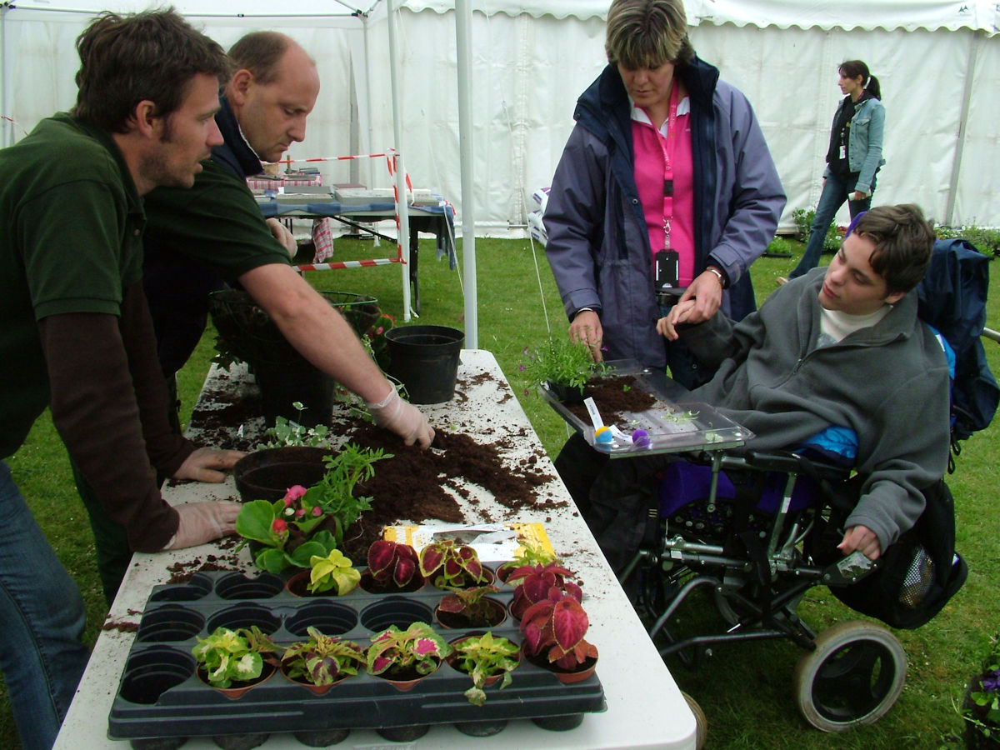
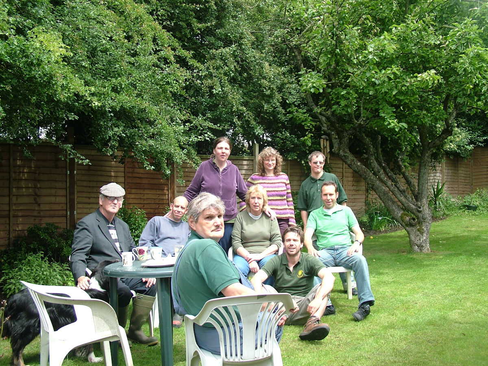
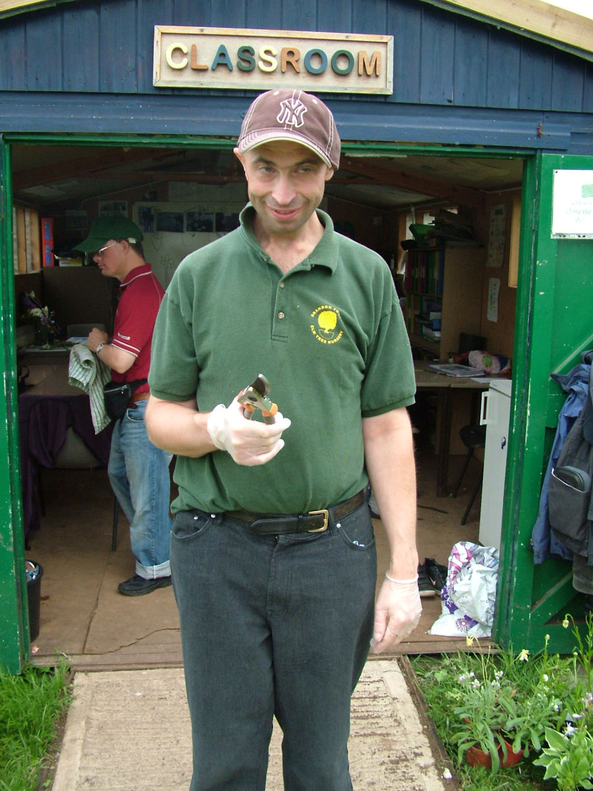
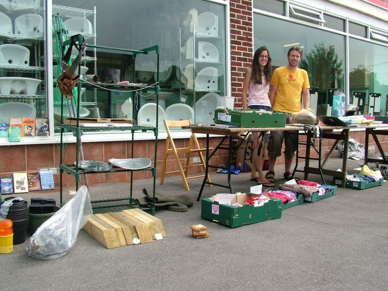
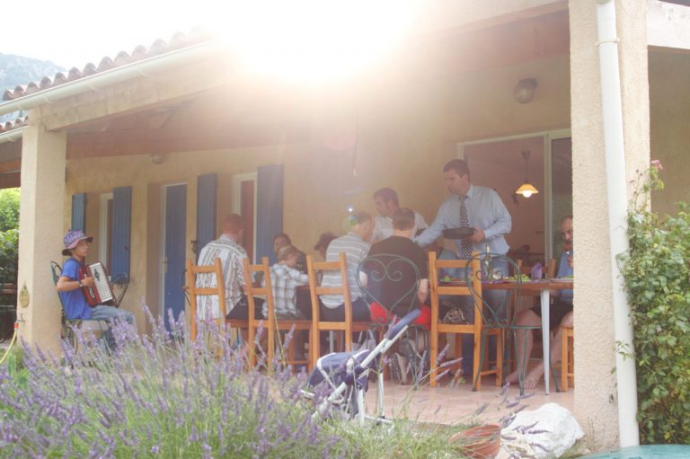
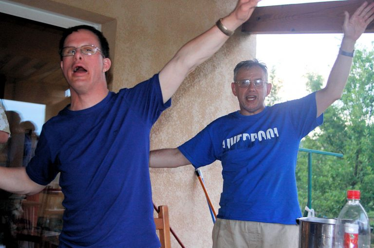
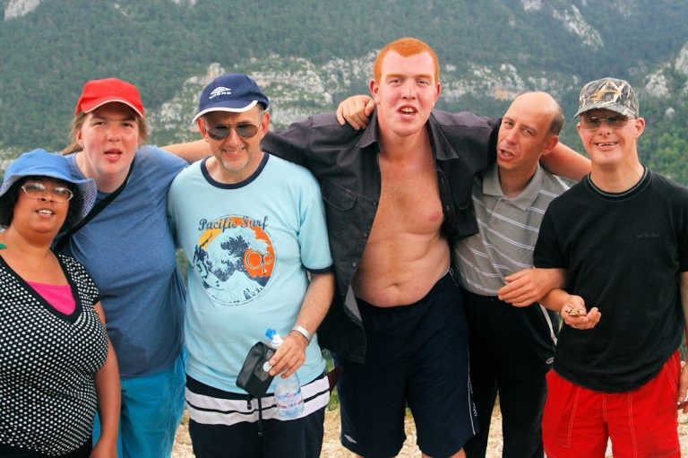
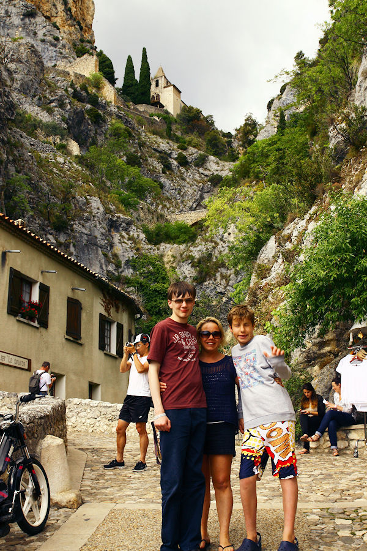

The Birth of Go Beyond and Gratitude to Tracy
By Ian Callen – Go Beyond Founder
Go Beyond Holidays is now 15 years old. We have facilitated hundreds of supported holidays all over Europe and into Africa. Sometimes, usually whilst supporting our guests on holiday, when sat around a full bustling dinner table and after a full day, I reflect back, to when I first had the idea for supported holidays and smile to myself at how far the idea has come. I would like to share with you how Go Beyond came into being, as more than often, people ask me the question, why did you set up a company that supports people with autism, learning disabilities and other hidden disabilities to travel and have holidays? How did you get here? So here is how Go Beyond was born, a story which begins with a young family.
The seed of Go beyond Holidays was planted freely in my head when I was a young man back in 2007. I was living and working in the city of my birth, Bristol, England, married to Anna, with two small children, (who are now in the Go Beyond team!) my dreams still fresh in my mind, waiting to become reality.
After spending my post education early years, working in insurance and record shops, I lived for three years in St Tropez, France. The combination of the mundane (working in an office), cultural (working in a record shop) and exotica (living in Provence by the Mediterranean) gave me the impetus to want to do something different and useful to society. I was living in the 90’s, a time when you could feel the heat of the final embers of optimism, a time before the world was flooded with an abundance of information ushered in by the internet and smart phones.
I trained in horticulture and conservation, wanting to be close to the land, and after dabbling in landscaping, I trained to be a teacher and was employed by the Brandon Trust, a charity that provides supported living to people with autism and learning disabilities, and I was fortunate enough to be given the opportunity to work in one of their supported employment projects, Elm Tree Farm, teaching horticulture and conservation.
During my time working for the Brandon Trust, one of my key inspirations was my boss, Tracy Date. She was responsible for developing the education and training facilities ran by Brandon Trust. Tracy immersed me in the world of possibilities and opportunity for people who need a bit of support in life. My new teaching path brought me into touch with the local community. One of our classrooms was at Eastville Park, a large Victorian park with many conservation projects that we joined and we met many local groups. It was also a fertile time in my life for ideas, and any idea that I put forward to Tracy, she would come back to me and say, ‘cost it up and if we can afford it, go for it!!’.
Pretty much every idea I proposed Tracy gave me the green light. With this support from Tracy, the possibilities and opportunities opened up for me and my students. Together we organised a farmers market, a photography exhibition, help to restore an old swimming pool area into a garden, joined a tawny owl project, made bird boxes for the local park, organised an open air carol service and tellingly, a wildlife holiday to St Davids in Pembrokeshire, Wales. This holiday we had, in a cold February, perhaps sowed the seeds for Go Beyond. I remember, to keep the costs down for the trip, we proposed to the manager of the hostel in St Davids that we could do some gardening work in exchange for letting us stay. He agreed and we worked two days clearing brambles in and around the old hostel in very cold temperatures, but sharp blue skies, together with hot drinks to keep us happy and warm.
What emerged during this week away was an element that I noticed was absent from our normal sessions at the farm. It was like a community spirit, or a comradery that comes with being together all day for a period of time. Eating, sleeping, getting out in the countryside, working together, joking around and being silly, and best of all, talking. Talking about nothing, talking about important issues, having a time together that gives spaces for conversations to wander here, there and everywhere, that we couldn’t get to, in our classes back in Bristol.
The time came when my family and I had made the big decision to move to France. Anna and I had found work at an international school in Provence, a school set up to support kids with dyslexia and other challenging behaviours. It was a dream chance for us. We were very excited.
During the last few days at Elm Tree Farm, many of the students would come in to the classroom, a wooden shed, to wish me luck, ‘au revoir’, they would warmly smile and ‘Bonne Chance Ian’. I would always thank them and say ‘you will have to come down and visit, Provence is a beautiful place with lots to see and the sun is always shining’. After saying this a few times, the idea struck me, like a bolt from the heavens, of course a group could come down and visit, on holiday, together with support, like the St Davids holiday’. And there the idea was planted and it waited for the right time to germinate and grow.
After a couple of years living in France, the school where Anna and I worked, closed. In France, if you are made unemployed, the state will match your salary for a year to help you stay on your feet. We used this time to weigh up our options. Should we move back to England? Should we look for work in France? What could we do? This is when I shone the ‘supported holiday’ idea with light, brought it out into the open, talking it over with Anna and friends, how it could work. We decided to run a pilot holiday, to see how it would work. We got in touch with some of my ex students from Elm Tree Farm to see if there was any interest in a holiday in Provence, in and around the area where I now lived, called the gorges du Verdon. Seven former students wanted to come down and visit and were happy to be holiday ‘guinea pigs’.
A warm July week, back in 2009, was spent together in a gite in a small village, called Quinson, and this is where Go Beyond, or Go Provence as we were known then, was born. It would take a few years for us to find our shape, and Provence was such a good place for us to ‘get good’ at organising and delivering supported holidays.
There have been many people over the years who have supported us and made us who we are today, but one pillar that stands out, is my supportive boss back at Brandon Trust, Tracy Date, who inspired me to believe that anything was possible and now, some fifteen years on, I couldn’t have dreamed how far we’ve come and the number of guests we’ve welcomed and supported. As George Michael once said to me “Ian, turn a different corner and we never would have met”. I’m so glad I turned the right corner to be introduced to Tracy and The Brandon Trust and the path my life has taken since.
Thanks Tracy.
Author: Ian Callen - Go Byeond Founder
17 January 2025

Ian and Elm Tree at a Farmers Market
Ian and one of his classes at Elm Tree Farm
Outside the Elm Tree Farm classroom or shed where the idea for Go Beyond was born
Ian and Anna sell the things they don't need before they depart for France
The first Go Provence or Go Beyond holiday in Provence 2009
Post dinner fun on the first Go Provence or Go Beyond holiday
The first Go Provence guest group shot, one of hundreds to come
Tracy Date in Provence, she supported a group from The Brandon Trust back in 2014
Go Beyond Holidays is an independent agent for 360 Private Travel. All flights and flight-inclusive holidays on this website are financially protected by the ATOL scheme.
Phone number 00 44 7904 878365
E-mail: kevin@gobeyondholidays.com

Registered Name & Address:
360 Private Travel Limited, 54 High Street, Sevenoaks, TN13 1JG, United Kingdom,
Registration Number: 8512928. Registered in England & Wales
VAT Number: 163818688 ATOL 7514 IATA 91-2 0005 6 Virtuoso Member Number 3251
An independent affiliate of

360 Private Travel is a member of Virtuoso, allowing Go Beyond Holidays access to preferential rates and exclusive benefits at some of the finest hotels around the world.
For Your Financial Protection